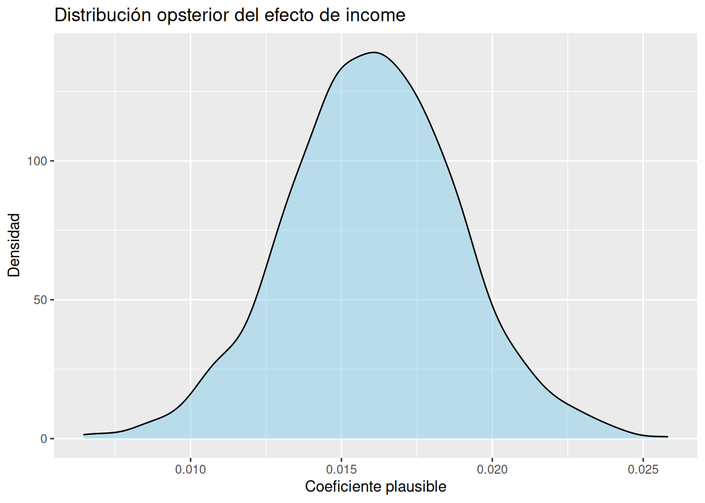
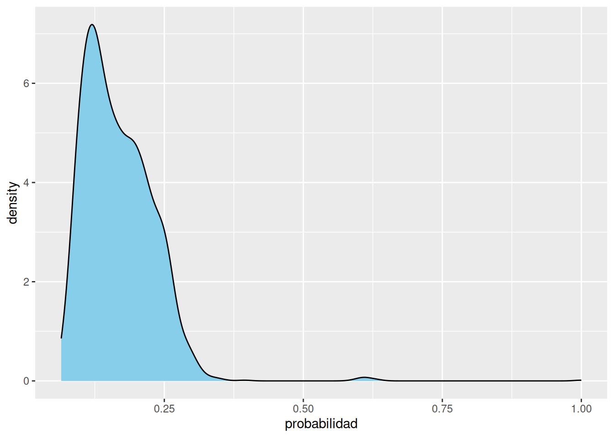

options(scipen = 999) # desactivar la notación científica
library(tidyverse)
library(rstanarm)
library(posterior)
library(bayesplot)6.- Modelos bayesianos prácticos con rstanarm
Introducción del capítulo
Durante muchos años, los modelos estadísticos tuvieron una reputación intimidante.
Para muchas personas, escuchar palabras como “modelo bayesiano”, “posterior”, “sampling” o “Stan” produce inmediatamente la sensación de que están entrando en un territorio reservado para matemáticos, ingenieros o especialistas extremadamente técnicos.
Pero en la práctica moderna, eso ya no es necesariamente cierto.
Hoy existen herramientas que permiten construir modelos útiles sin necesidad de dominar toda la matemática interna que los hace funcionar. Y eso es precisamente lo que hace tan interesante a rstanarm.
Este capítulo tiene un objetivo muy específico:
perder el miedo técnico al modelado bayesiano.
No vamos a profundizar en teoría matemática avanzada. No vamos a estudiar algoritmos complejos de optimización. No vamos a aprender Hamiltonian Monte Carlo en detalle.
En cambio, vamos a enfocarnos en algo mucho más importante para este libro:
- interpretar incertidumbre,
- pensar probabilísticamente,
- y usar modelos como herramientas para explorar escenarios plausibles.
La idea central de este capítulo es sencilla pero profunda:
Un modelo bayesiano no produce una única respuesta definitiva.
Produce muchos mundos plausibles compatibles con los datos
Y eso cambia completamente la manera de pensar el análisis de datos.
1. ¿Por qué los modelos bayesianos suelen intimidar?
Gran parte de la estadística tradicional fue enseñada durante décadas como una colección de fórmulas, pruebas de hipótesis y reglas rígidas.
Muchas personas aprendieron que hacer estadística significaba:
- memorizar ecuaciones,
- calcular valores críticos,
- o interpretar p-values.
El problema es que ese enfoque suele ocultar la parte más humana e intuitiva del análisis:
la incertidumbre.
En el mundo real:
- nunca tenemos información perfecta,
- los datos son incompletos,
- las personas cambian,
- los mercados fluctúan,
- y el futuro jamás está completamente determinado.
Por eso el enfoque bayesiano resulta tan natural.
En lugar de fingir certeza absoluta, los modelos bayesianos trabajan explícitamente con incertidumbre.
No preguntan:
“¿Cuál es la única respuesta correcta?”
Preguntan:
“¿Qué escenarios parecen plausibles dados los datos disponibles?”
Ese cambio filosófico es enorme.
2. ¿Qué es rstanarm?
rstanarm es una librería de R diseñada para construir modelos bayesianos de manera relativamente simple.
Internamente utiliza Stan, uno de los motores bayesianos más potentes y modernos disponibles actualmente. Pero una de las grandes ventajas pedagógicas de rstanarm es que nos permite usar modelos sofisticados sin tener que programar Stan directamente.
En otras palabras:
- Stan hace el trabajo computacional complejo,
- mientras nosotros nos enfocamos en interpretar resultados.
Eso encaja perfectamente con la filosofía de este libro.
¿Por qué usamos rstanarm en este libro?
Porque es:
- moderno,
- relativamente simple,
- compatible con tidyverse,
- razonablemente rápido,
- y excelente para aprendizaje práctico.
Además, funciona bastante bien en entornos modestos como Posit Cloud Free cuando usamos modelos pequeños y pedagógicos.
3. Pensar en modelos como “múltiples futuros plausibles”
Imagina que una empresa ejecuta una campaña de marketing.
Después de analizar los datos, queremos entender preguntas como:
- ¿las personas con mayores ingresos aceptan más campañas?
- ¿el gasto total influye en la respuesta?
- ¿la edad cambia las probabilidades de conversión?
Un enfoque clásico podría intentar producir:
- un único coeficiente,
- una única línea,
- o una única predicción.
El enfoque bayesiano piensa diferente.
En lugar de una sola realidad exacta, el modelo genera:
- muchas versiones plausibles del mundo,
- muchas líneas posibles,
- muchos parámetros razonables compatibles con los datos.
Es como observar múltiples mapas incompletos del mismo territorio.
Ninguno es perfecto. Pero juntos nos ayudan a entender mejor la incertidumbre.
4. Contexto de negocio: campañas de marketing
Antes de construir modelos, necesitamos entender el problema empresarial.
El dataset de este capítulo corresponde a campañas de marketing.
Una campaña de marketing es un intento organizado de persuadir clientes para que realicen una acción específica, por ejemplo:
- comprar un producto,
- aceptar una oferta,
- responder una promoción,
- o suscribirse a un servicio.
En analytics, una de las preguntas más importantes es:
¿Qué características parecen asociarse con una mayor probabilidad de respuesta?
Eso permite:
- segmentar clientes,
- personalizar campañas,
- reducir costos,
- y tomar mejores decisiones comerciales.
Pero aquí aparece algo importante:
nunca podremos predecir el comportamiento humano con certeza absoluta.
Por eso necesitamos modelos probabilísticos.
5. Preparando el entorno de trabajo
Primero cargamos las librerías principales.
Ahora cargamos el dataset
# Cargar la dataset de marketing
marketing <- read_delim(
"../data/marketing_campaign.csv",
delim = ";"
#guess_max = 10000,
#show_col_types = FALSE
)Antes de modelar, siempre conviene explorar un poco los datos
glimpse(marketing) # produce:Rows: 2,240
Columns: 29
$ ID <dbl> 5524, 2174, 4141, 6182, 5324, 7446, 965, 6177, 485…
$ Year_Birth <dbl> 1957, 1954, 1965, 1984, 1981, 1967, 1971, 1985, 19…
$ Education <chr> "Graduation", "Graduation", "Graduation", "Graduat…
$ Marital_Status <chr> "Single", "Single", "Together", "Together", "Marri…
$ Income <dbl> 58138, 46344, 71613, 26646, 58293, 62513, 55635, 3…
$ Kidhome <dbl> 0, 1, 0, 1, 1, 0, 0, 1, 1, 1, 1, 0, 0, 1, 0, 0, 1,…
$ Teenhome <dbl> 0, 1, 0, 0, 0, 1, 1, 0, 0, 1, 0, 0, 0, 1, 0, 0, 1,…
$ Dt_Customer <date> 2012-09-04, 2014-03-08, 2013-08-21, 2014-02-10, 2…
$ Recency <dbl> 58, 38, 26, 26, 94, 16, 34, 32, 19, 68, 11, 59, 82…
$ MntWines <dbl> 635, 11, 426, 11, 173, 520, 235, 76, 14, 28, 5, 6,…
$ MntFruits <dbl> 88, 1, 49, 4, 43, 42, 65, 10, 0, 0, 5, 16, 61, 2, …
$ MntMeatProducts <dbl> 546, 6, 127, 20, 118, 98, 164, 56, 24, 6, 6, 11, 4…
$ MntFishProducts <dbl> 172, 2, 111, 10, 46, 0, 50, 3, 3, 1, 0, 11, 225, 3…
$ MntSweetProducts <dbl> 88, 1, 21, 3, 27, 42, 49, 1, 3, 1, 2, 1, 112, 5, 1…
$ MntGoldProds <dbl> 88, 6, 42, 5, 15, 14, 27, 23, 2, 13, 1, 16, 30, 14…
$ NumDealsPurchases <dbl> 3, 2, 1, 2, 5, 2, 4, 2, 1, 1, 1, 1, 1, 3, 1, 1, 3,…
$ NumWebPurchases <dbl> 8, 1, 8, 2, 5, 6, 7, 4, 3, 1, 1, 2, 3, 6, 1, 7, 3,…
$ NumCatalogPurchases <dbl> 10, 1, 2, 0, 3, 4, 3, 0, 0, 0, 0, 0, 4, 1, 0, 6, 0…
$ NumStorePurchases <dbl> 4, 2, 10, 4, 6, 10, 7, 4, 2, 0, 2, 3, 8, 5, 3, 12,…
$ NumWebVisitsMonth <dbl> 7, 5, 4, 6, 5, 6, 6, 8, 9, 20, 7, 8, 2, 6, 8, 3, 8…
$ AcceptedCmp3 <dbl> 0, 0, 0, 0, 0, 0, 0, 0, 0, 1, 0, 0, 0, 0, 0, 0, 0,…
$ AcceptedCmp4 <dbl> 0, 0, 0, 0, 0, 0, 0, 0, 0, 0, 0, 0, 0, 0, 0, 0, 0,…
$ AcceptedCmp5 <dbl> 0, 0, 0, 0, 0, 0, 0, 0, 0, 0, 0, 0, 0, 0, 0, 1, 0,…
$ AcceptedCmp1 <dbl> 0, 0, 0, 0, 0, 0, 0, 0, 0, 0, 0, 0, 0, 0, 0, 1, 0,…
$ AcceptedCmp2 <dbl> 0, 0, 0, 0, 0, 0, 0, 0, 0, 0, 0, 0, 0, 0, 0, 0, 0,…
$ Complain <dbl> 0, 0, 0, 0, 0, 0, 0, 0, 0, 0, 0, 0, 0, 0, 0, 0, 0,…
$ Z_CostContact <dbl> 3, 3, 3, 3, 3, 3, 3, 3, 3, 3, 3, 3, 3, 3, 3, 3, 3,…
$ Z_Revenue <dbl> 11, 11, 11, 11, 11, 11, 11, 11, 11, 11, 11, 11, 11…
$ Response <dbl> 1, 0, 0, 0, 0, 0, 0, 0, 1, 0, 0, 0, 0, 0, 0, 1, 0,…El objetivo no es memorizar todas las variables.
El objetivo es empezar a familiarizarnos con el “territorio” que vamos a modelar.
6. Un primer modelo bayesiano sencillo
Vamos a construir un modelo pequeño y pedagógico.
Supongamos que queremos explorar si el ingreso anual parece relacionarse con la aceptación de una campaña.
La idea intuitiva es simple:
- algunas personas tienen más ingresos,
- otras menos,
- y queremos explorar si eso parece cambiar la probabilidad de aceptar una campaña.
7. La fórmula del modelo
Usaremos un modelo logístico sencillo.
La estructura conceptual es:
P(y=1) = 1 / 1 + e−(β0+β1x)
La interpretación intuitiva es más importante que la ecuación.
El modelo intenta estimar:
- cómo cambia la probabilidad de respuesta,
- a medida que cambia una variable como ingresos.
No necesitamos dominar toda la matemática interna.
Lo importante es entender que:
- el modelo produce probabilidades,
- y además produce incertidumbre alrededor de esas probabilidades.
8. Nuestro primer stan_glm()
# Escalar los ingresos para que no salgan los valores de las
# simulaciones tan pequeñas
marketing <- marketing %>%
mutate(
Income_k = Income / 1000
)
# Entender como se relaciona Income con Response
modelo_ingresos <- stan_glm(
Response ~ Income_k,
data = marketing,
family = binomial(),
chains = 2,
iter = 1000,
seed = 1234,
refresh = 0 # para ocultar el progreso de la ejecución
)Este bloque puede parecer técnico al inicio, pero realmente tiene pocas piezas importantes.
Response ~ Income
Le dice al modelo:
“Intenta entender cómo Income se relaciona con Response.”
family = binomial()
Indica que estamos modelando:
- sí/no,
- respuesta/no respuesta,
- aceptación/no aceptación.
Es decir:
una probabilidad.
chains = 2
El modelo hará dos exploraciones independientes del espacio de posibilidades.
Una analogía útil:
imagina dos exploradores recorriendo un territorio incierto por caminos distintos.
Si ambos llegan a conclusiones similares, empezamos a confiar más en que estamos entendiendo el paisaje correctamente.
iter = 1000
Indica cuántas simulaciones realizará el modelo.
Más iteraciones producen más escenarios plausibles.
Pero en este libro priorizamos:
- rapidez,
- claridad,
- y compatibilidad con Posit Cloud Free.
Por eso usaremos configuraciones moderadas.
9. Leyendo los resultados básicos
print(modelo_ingresos) # produce:stan_glm
family: binomial [logit]
formula: Response ~ Income_k
observations: 2216
predictors: 2
------
Median MAD_SD
(Intercept) -2.6 0.2
Income_k 0.0 0.0
------
* For help interpreting the printed output see ?print.stanreg
* For info on the priors used see ?prior_summary.stanregAquí aparece algo muy importante.
El modelo NO devuelve únicamente un número.
Devuelve:
- estimaciones plausibles,
- incertidumbre,
- rangos,
- y distribuciones posteriores.
Eso es exactamente lo que hace especial al enfoque bayesiano.
10. ¿Qué es una distribución posterior?
Esta es una de las ideas centrales de todo el libro.
Después de observar los datos, el modelo genera una distribución de posibilidades plausibles para cada parámetro.
No dice:
“El coeficiente verdadero es exactamente 0.42.”
Dice algo más honesto:
“Dados los datos, algunos valores parecen más plausibles que otros.”
Eso es una distribución posterior.
11. Visualizando incertidumbre
Ahora vamos a hacer visible la incertidumbre.
# Ver las simulaciones posteriores individuales del modelo y
# convertirlas en un dataframe
posterior <- as_draws_df(modelo_ingresos)
posterior[0:6, ] # produce:# A draws_df: 6 iterations, 1 chains, and 2 variables
(Intercept) Income_k
1 -2.7 0.020
2 -2.6 0.017
3 -2.7 0.016
4 -2.6 0.016
5 -2.5 0.014
6 -2.5 0.013
# ... hidden reserved variables {'.chain', '.iteration', '.draw'}Cada fila representa un escenario plausible generado por el modelo. La columna de income_K sugiere que cada 1000 dólares extras de ganancias o Income, aumenta un poco la probabilidad de respuesta a la campaña o Response en casi todos los escenarios. Lo que sugiere que los clientes con mayores ingresos tienden a presentar una probabilidad ligeramente superior de aceptar la campaña
Ahora podemos visualizar la distribución posterior del coeficiente asociado a Income.
# visualizar la distribución posterior del coeficiente asociado a
# income. Es decir este gráfico muestra cuánto aumenta la probabilidad
# de Respuesta o Response cada 1000 dólares extras de ganancia
posterior %>%
ggplot(aes(x = Income_k)) +
geom_density(fill = "skyblue", alpha = 0.5) +
labs(
title = "Distribución opsterior del efecto de income",
x = "Coeficiente plausible",
y = "Densidad"
)
12. Interpretación intuitiva del gráfico
Este gráfico es extremadamente importante.
No representa:
- datos observados directamente,
- ni clientes individuales.
Representa:
- incertidumbre del modelo.
Cada punto de la distribución representa un valor plausible para el parámetro.
Algunas zonas son más plausibles que otras.
Y eso nos recuerda algo fundamental:
los modelos no eliminan incertidumbre; la hacen visible.
13. Intervalos plausibles
Uno de los conceptos más útiles del enfoque bayesiano es el intervalo plausible.
Podemos calcularlo así:
posterior_interval(modelo_ingresos, prob = 0.95) # produce: 2.5% 97.5%
(Intercept) -2.95246604 -2.27262622
Income_k 0.01044604 0.02170858La interpretación intuitiva es muchísimo más importante que la técnica.
NO significa:
“95% de probabilidad frecuentista clásica.”
En lenguaje humano, significa algo parecido a:
“Dados los datos y el modelo, este rango contiene valores muy plausibles para el parámetro.”
Eso resulta extremadamente útil para decisiones reales.
Porque las decisiones humanas rara vez necesitan certeza absoluta.
Necesitan:
- rangos razonables,
- escenarios plausibles,
- y comprensión de incertidumbre.
Estos intervalos posteriores realmente significan: Cada 1000 dólares de mayores ganancias, se asocian con un aumento de probabilidad de respuesta a la publicidad de entre 0.0104 y 0.0217 . También dice el modelo que cuando los ingresos son iguales a cero (algo no imposible pero sí improbable) la probabilidad de una respuesta Response a un campaña publicitaria es entre -2.95 y -2.27 (en la escala interna del modelo log-odds) es decir : 1 / (1 + exp(2.6)) = 0.07 +- 7% entre -2.95 (5%) y -2.27 (9%). Es decir para una persona de cero de ingresos la probabilidad de respuesta Response está entre 5% y 9%
14. Visualizando múltiples escenarios plausibles
Una de las ideas más poderosas del modelado bayesiano es que podemos visualizar múltiples futuros compatibles con los datos.
Por ejemplo:
# Tomar todos los escenarios plausibles del modelo y calcular las
# predicciones correspondientes.
predicciones <- posterior_linpred( # posterior_linpred: utiliza
# todas las simulaciones generadas
# por el modelo para calcular
# predicciones
modelo_ingresos,
transform = TRUE # no me des log-odds, dame probabilidades
) # produce:Ahora podemos visualizar las predicciones o futuros plausibles
# Diagrama de densidad para Visualizar predicciones (futuros
# plausibles)
tibble(
probabilidad = predicciones[1, ]
) %>%
ggplot(aes(x = probabilidad)) +
geom_density(fill = "skyblue")
15. Reflexión importante sobre incertidumbre
En muchos cursos tradicionales, los modelos parecen producir respuestas exactas.
Pero en la práctica:
- los datos son incompletos,
- las muestras son limitadas,
- y el futuro siempre contiene incertidumbre.
El enfoque bayesiano no intenta ocultar eso.
Lo incorpora explícitamente.
Y esa honestidad probabilística es una de sus mayores fortalezas.
16. Posibles errores de interpretación
Error 1: pensar que el modelo “descubre la verdad”
Los modelos no descubren verdades absolutas.
Construyen aproximaciones plausibles.
Error 2: ignorar incertidumbre
Dos coeficientes similares pueden tener incertidumbres muy distintas.
La incertidumbre importa.
Error 3: interpretar probabilidades como certezas
Un cliente con probabilidad de respuesta de 70% todavía podría no responder.
Las probabilidades describen tendencias plausibles, no destinos inevitables.
17. Reflexión bayesiana
Este capítulo introduce una idea profundamente humana:
vivimos tomando decisiones incompletas.
- médicos,
- empresas,
- gobiernos,
- inversores,
- y personas comunes,
todos actuamos bajo incertidumbre.
Los modelos bayesianos no eliminan esa incertidumbre.
Pero pueden ayudarnos a navegarla mejor.
Y eso cambia la manera de pensar el análisis de datos.
18. Conexión con capítulos futuros
En este capítulo aprendimos:
- qué es un modelo bayesiano práctico,
- cómo usar stan_glm(),
- cómo interpretar incertidumbre posterior,
- y cómo visualizar escenarios plausibles.
En los próximos capítulos iremos más lejos.
Exploraremos:
- relaciones entre variables,
- regresión lineal bayesiana,
- asociaciones comerciales,
- predicción probabilística,
- y forecasting bajo incertidumbre.
Pero mantendremos siempre la misma filosofía:
los modelos no reemplazan el criterio humano. ayudan a pensar mejor bajo incertidumbre.
19. Ejercicios
Ejercicio 1
Modifica el número de iteraciones:
iter = 500
y luego:
iter = 2000
Pregunta:
- ¿cómo cambia la distribución posterior?
- ¿qué diferencias visuales observas?
Ejercicio 2
Construye otro modelo usando:
- Age
- o MntWines
como predictor.
Pregunta:
- ¿la incertidumbre parece mayor o menor?
Ejercicio 3
Visualiza múltiples escenarios plausibles usando:
posterior_linpred()
Pregunta:
- ¿qué transmite visualmente el “abanico” de posibilidades?
Ejercicio 4
Interpreta verbalmente un intervalo plausible.
Evita lenguaje matemático complejo.
Intenta explicarlo como si hablaras con:
- un gerente,
- un médico,
- o una persona sin formación estadística.
Ejercicio 5
Reflexión conceptual:
¿Por qué podría ser peligroso tomar decisiones empresariales ignorando incertidumbre?